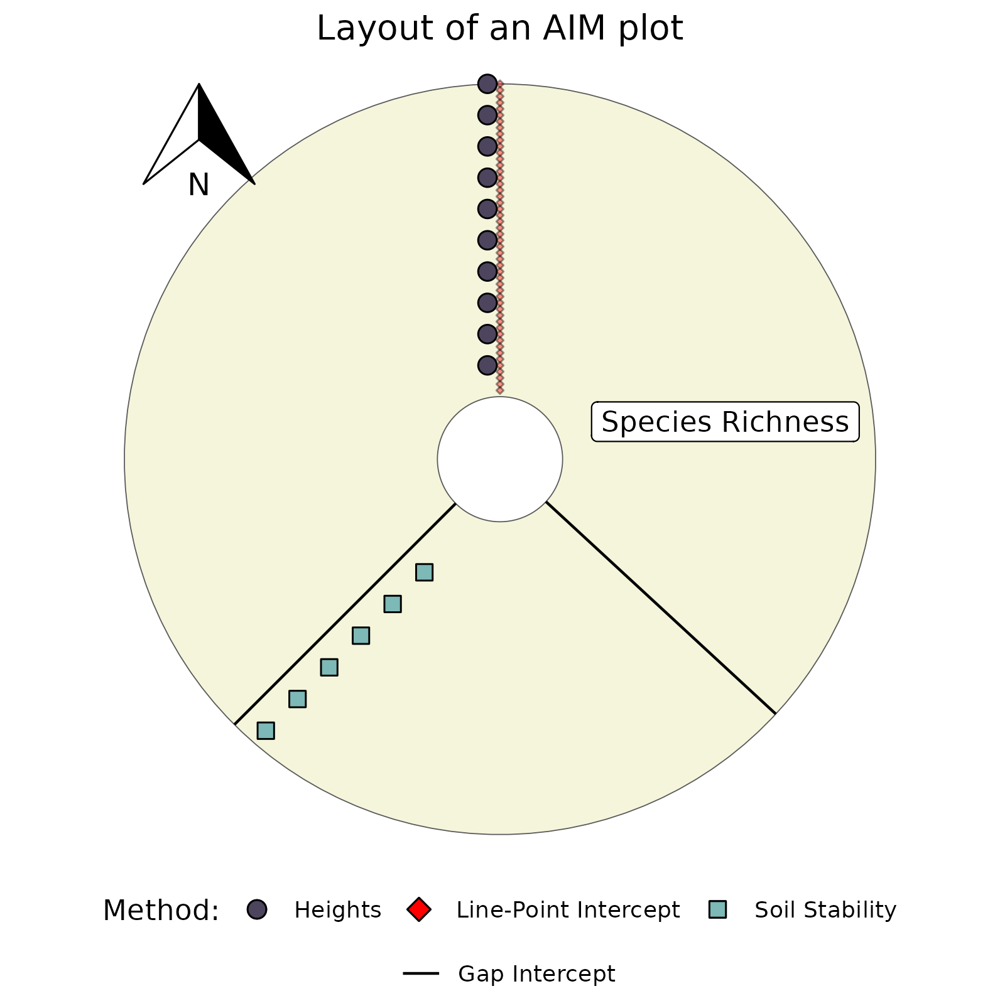
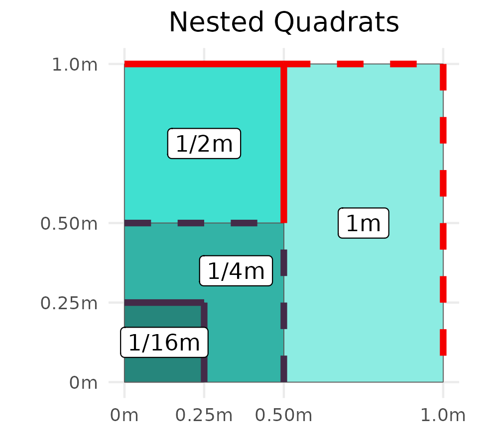

A very quick introduction to vegetation assessments
June 5, 2024
How do we measure plant absolute cover?
Depends on vegetation type, and annual climatic variability
Forest
- Line Intercept
Grassland & Savannah
- Line Intercept (LI) & Line-Point Intercept (LPI)
- (Historic) Daubenmire
- Line Intercept (LI) & Line-Point Intercept (LPI)
Small plants!
- Grids with equal area cells
- most subjective of the methods
- complicated by time of sampling
- Grids with equal area cells


How do we measure plant abundance, frequency, and density?
- Belt Transects (abundance)
- plants are very sparse - pop. census size
- set up around LPI transects
- plants are very sparse - pop. census size
- Nested Quadrats (frequency)
- monitor multiple species simultaneously - spatial distribution / stability of populations
- Daubenmire frames also used
- monitor multiple species simultaneously - spatial distribution / stability of populations
- Quadrats (density)
- plants are moderately abundant - pop. census size, spatial distribution
- plants are moderately abundant - pop. census size, spatial distribution


How do we measure diversity?
- Can be done by wandering around areas…
- Quadrats
- Generally much larger than in other types of sampling
- Fewer replicates
- Generally much larger than in other types of sampling
- Oriented to follow environmental gradients
- The gold standard: Modified Whittaker
- MW has two less intensive follow-up variants, the ‘Intensive’ and ‘Extensive’
- I&E plots can characterize microhabitats (use determined via rarefaction)
- takes a long time…

- \(\overline{C}\) is the Mean Coefficient of Conservatism, or for short Mean C
- \(\sqrt{S}\) is the square root of the number of species included in the calculation
- \(\sqrt{S}\) is the square root of the number of species included in the calculation
What do we mean by Species Richness?
- The number of plant taxa in an area; also referred to as \(\gamma-\text{diversity}\)
- Measuring it is time intensive, as many plants are locally rare
- Understanding progress of sampling via rarefaction
- \(\gamma-\text{diversity}\), and it’s measurement, is influenced by:
- number of species per habitat (\(\alpha-\text{diversity}\))
- turnover in species between habitats (\(\beta-\text{diversity}\))
- number of species per habitat (\(\alpha-\text{diversity}\))

Reading Plots
- Boundary Decisions
- Are plants rooted in the plot?
- Which side of the plots are plant rooted in?
- Order to reading?
- Nested quadrats go from smallest to largest plot
- Only record new species along the way
- If same species is present in ‘2’ as in ‘1’ do not record.
- Only record new species along the way
- Nested quadrats go from smallest to largest plot
- Avoiding double counting
- search methodically following a single direction
- Avoid trampling
- search methodically following a single direction
- Search in 1/2m wide swaths

Management Decisions - Species Cover
- Cover of species naturally ebb and flow
- Certain management actions can increase cover of some species, while vastly decreasing cover of others
- Many of the decreasing species may be important for wildlife, or ecosystem function (e.g. water retention, soil stability)

Management Decisions - Vegetation Similarity
- If we want to restore an area, what is our target?
- Example: We may want X% absolute cover of broad leaved shrubs w/ < X% relative cover of species Y
- But where do we get these standards from?
- Example: We may want X% absolute cover of broad leaved shrubs w/ < X% relative cover of species Y
- Reference site, an area with similar soils & climate to our site
- altered site should be able to produce a veg community similar to the reference
- altered site should be able to produce a veg community similar to the reference
- Can we expect areas with similar vegetation to respond similarly to management actions?
- e.g. fire, grazing cattle/sheep/goats, removal of invasives?

Management Decisions - FQA
- Should areas with more remnant species be prioritized for active management? and why
- Some species cannot be ‘added’ back in via restoration
- These areas maybe managed to reduce further anthropogenic impacts, e.g. invasive removal, disallow certain recreation activities.
- Some areas with higher C-values likely to still harbor rare-species, impetus to survey.
- Some species cannot be ‘added’ back in via restoration
- Use Mean C, or FQI to detect these areas.

Our activity for the early afternoon
- Compare two different parts of McDonald Woods, Upland White Oak & Swamp White Oak
- Assess how quadrats capture species richness
- Do sites differ in their Mean C, FQI, or Wetland Indicator status?
- Determine appropriate quadrat sizes for future monitoring
- Consider similarity of microhabitats across sites

Methods
- Record all ‘eudicot’ plant species rooted in nest #1
- Move to nest #2 and record only the species not found in nest #1
- Continue to do this for all 4 nests
- Move to nest #2 and record only the species not found in nest #1
- After completing the nests, record all plant species not found in the nests, which are present in the final 1x1m square
- Each person should be able to read a plot once, each person should record
- DON’T WORRY ABOUT THE SPECIES IDs

1 - Are we capturing a representative amount of the species diversity?
- Not all species are equally common, and detection of locally rare species is difficult
- We can assess sampling completion using rarefaction, and random shuffling of plots
- If the number of species (Y axis), increase greatly via extrapolation, then we should sample more plots

2 - Are the two sites notably different?
- FQI reflects the history of disturbance at a site, the sites disturbance histories vary
- Hypothesis: the Swamp white Oak section has less historic anthropogenic disturbance
- Null Hypothesis: the FQI of the two sites do not differ
- Two-sided Wilcoxon Signed Rank Test, data are unpaired
- Easy method: compare the central tendency of all quadrats per site
| Site | MCoc | FQI |
|---|---|---|
| Upland White Oak | 3.681159 | 13.774660 |
| Swamp White Oak | 2.234043 | 7.836485 |

4 - Are certain microhabits more similar across than between sites?
- Some plots may have more similarities to plots at the other site
- This may indicate each site has pockets in similar states
- These sites are totally distinct in forb composition!!!